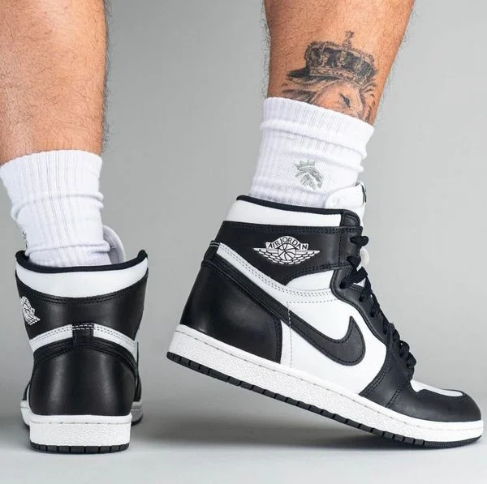
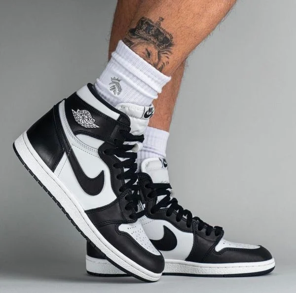
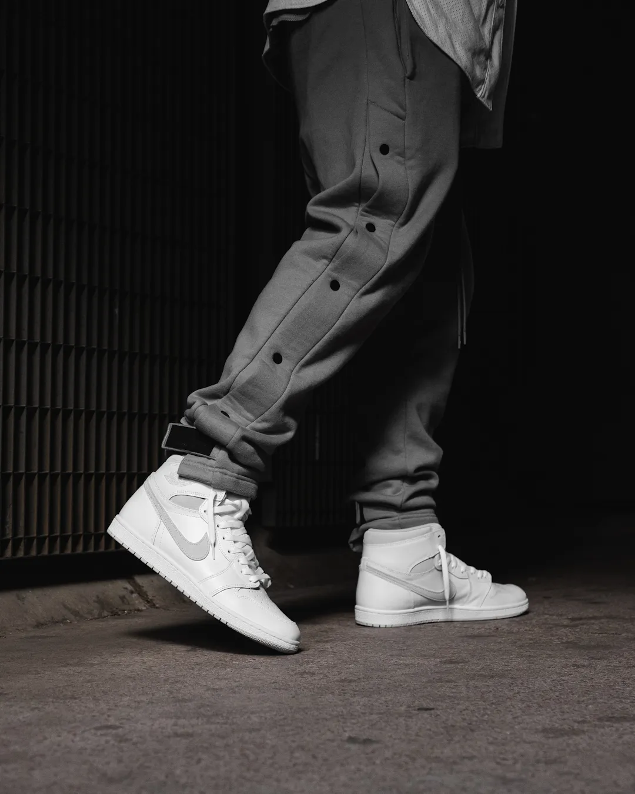
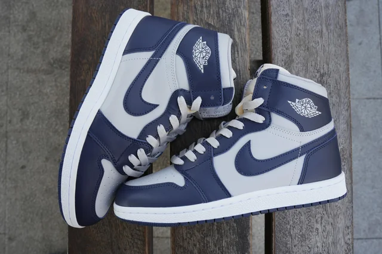

Được thiết kế độc quyền cho nhu cầu của Michael Jordan vào năm 1985. Khởi nguồn cho bản thiết kế vĩ đại này bắt nguồn từ sự phũ phàng của tân binh từ Chicago Bulls khi Nike đang trong quá trình tiếp cận với lời hứa sẽ xây dựng một thương hiệu riêng xoay quanh anh. Trớ trêu thay MJ lại cho rằng những thiết kế của hãng lại có phần ” đế quá dày ” khiến tay bóng có cảm giác không ưng ý khi hoạt động.

Hiểu được điều đó, Nike không ngừng cải tạo cũng như tinh chỉnh lại bản thiết kế của mình để thỏa mãn nhu cầu sử dụng cho gương mặt đại diện đình đám của mình. Trải qua quá trình dài hạn, Air Jordan 1 High đã vượt trên thể thao để trở thành đôi giày mang tính thương hiệu trong làng streetwear và sau đó là lịch sử.
Có thể nói 2024 dự kiến sẽ là một năm sôi động của làng sneaker thế giới khi mà hầu hết các thương hiệu đình đám đang sẵn sàng tung ro thị trường những bộ sưu tập bom tấn. Tâm điểm của sự kiện này không thể không nhắc đến Jordan 1 High 85 sẽ được bày bán trong thời gian tới để người hâm mộ có cơ hội sở hữu lại những mẫu giày đặc biệt sau thời gian dài im hơi lặng tiếng.
Không để bạn chờ đợi lâu hơn được nữa, sau đây hãy cùng Sneakeraddictor điểm qua những phiên bản nổi bật của Jordan 1 High 85 nhé !
Được ra mắt vào 15/2/2023, sử dụng tone màu cơ bản quen thuộc trắng - đen, có thể gọi Air Jordan 1 Black White 85 ” Black/White ” là hậu duệ của phiên bản đàn anh đời trước Air Jordan 1 High Panda. Giống nhau về màu sắc nhưng khác nhau về chất liệu và cảm giác mang là những nhận định cơ bản của khách hàng khi trải nghiệm qua hai dòng giày này.
Sử dụng các chất liệu phổ thông để hình thành nên một đôi giày như da tổng hợp và phần logo được in trực tiếp lên bề mặt giày. Gía thành sản xuất rất rẻ, đồng nghĩa với việc cảm giác mang mà đôi giày mang lại sẽ không thể so sánh được so với những phiên bản có chất liệu tốt hơn. Nhưng quy chung với thiết kế đơn giản nhưng không kém phần sang trọng, Air Jordan 1 Black White 85 ” Black/White ” vẫn có thể được xem như phiên bản đáng trải nghiệm trong năm nay.
Lấy sự “trung tính” làm trung tâm cho việc hình thành màu sắc, Nike Air Jordan 1 Retro High 85 OG ‘Neutral Grey” có thể được xem là phiên bản tối giản nhất trong bộ sưu tập. Không phân biệt tuổi tác, giới tính và phong cách là một trong những ưu điểm nổi bật của màu xám.
Là sự hòa quyện giữa truyền thống và đương đại, Neutral Grey chắc chắn sẽ mang lại cho bạn những trải nghiệm mới mẻ nhưng không kém phần sang trọng trên mỗi chặng đường.
Là phiên bản có thiết kế đặc biệt nhất trong bộ sưu tập, Georgetown có phần mũi giày được bóp lại tương đối so với những phiên bản hiện tại. Là phiên bản độc đáo, phần swoosh hai bên thân giày được thiết kế to hơn bình thường. Bên cạnh đó, hãng cũng đã tinh tỉnh font chữ trên lưỡi gà và logo trở nên đặc biệt hơn nhằm mang lại sự đặc biệt cho đôi giày.
Bằng việc sử dụng chất liệu da cao cấp hơn, Nike Air Jordan 1 Retro High 85 Georgetown ‘Blue White’ sẽ mang lại cho bạn cảm giác mang dễ chịu hơn những phiên bản khác. Đặc biệt hơn, trên mỗi đôi giày ở phiên bản này đều được đánh mã số và size đặc trưng. Thật không quá lố lăng khi cho rằng Nike Air Jordan 1 Retro High 85 Georgetown ‘Blue White’ thực sự mang dáng vẻ của một đôi OG 85 đích thực.
Nếu bạn là người đang trong quá trình tìm kiếm cho mình một đôi Jordan 1 high 85 nhưng chưa biết nên mua ở đâu, thì Sneakeraddictor sẽ là đáp án cho những thắc mắc của bạn. Với kinh nghiệm lâu năm của mình, Sneakeraddictor tự tin sẽ là nơi đồng hành cùng bạn trên chặng đường tìm kiếm cho mình một đôi giày ưng ý. Còn chần chừ gì nữa mà không đến ngay để tìm cho mình đôi giày bạn hằng mong ước!